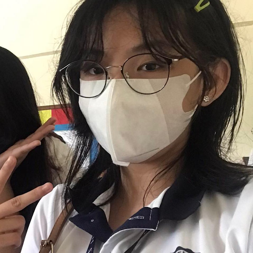

Volunteering and raising funds.
I. Problem Identification
Assessing a child's mental health is something we should prioritize. Lack of attention in regards to this can lead to consequences on the child's behavior. The issue is the lack of funds to pay for every child's psychological assessment as they are expensive. Moreover, damaged mental health doesn't recover automatically--not even fully; They leave scars. Prioritizing a child's mental health can help them gain a new sense that would help them grow healthier because the scars left behind would never be forgotten. Other problems encountered, are mostly coming from financial things, which could be for affording food, paying the bills, and more. And due to the fact, the sisters are also busy and struggling, which gives them more issues in their financial state.
II. The intervention
This project will help the SMAC institution with financial problems, especially with the lack of funds for psychological assessments. Since our main objective is to gather volunteers and raise funds and to be able to donate to the SMAC institution. This project will solve the top problem of SMAC institutions and help increase the Ignatian values and skills of Ateneans which in meaning both communities will be able to benefit from this project. The budget is also affordable, which is a total of 1,000 pesos d less. In this project, we gather volunteers and ourselves and provide no-use good condition items that can be used by anyone. And with those items provided, we sell them and donate the funds earned to the SMAC institution. We wish to achieve the goal for atleast 5,000 pesos, minimum would be 1,000 pesos. And with the funds earned. We will donate it to the SMAC institution.
How it benefits?
The project is significant to the institution since it benefits both the institution's funders and beneficiaries. Our project was developed in order to secure adequate money for the psychological evaluations of the kids, giving them the care they need to deal with their mental health problems. The reason the project is significant to the institution is because of its goals and methodology. It not only benefits the kids but also the institution's financial situation.
This project aims to help the problem of the SMAC institution which is the lack of funds for the psychological assessments of the children from the institution. This project involves the participation of the Junior Highschool students from Ateneo wherein they are required to participate in order to complete their performance task. This is important for the students in Ateneo because not only will it help them get good grades but this will also let them experience selling wherein they are able to sell and interact with people while selling. This will improve their socialization and will help them know how to properly sell items and could possibly help them in the future if ever they are to create a business. Not only will they get to experience being an entrepreneur but this will also better their lives since this project's goal is to help the children from the institution to be able to afford for their psychological assessments. It gives them the chance to show initiative and sell as many as they can so that all the children will be able to receive psychological assessments. This will help the students grow into a better person that cares for their neighbors. This will help them grow to be a good follower of God since this project aims to help the children of the institution and in doing so we are able to show love and care for them, we are able to give them the chance to become better people and understand each and any of their problems.
In our project, it promotes a good community. Since as we all know, our project “Volunteering and Raising funds” teaches and gives good influence to the general public. The main objective of this project is to thelp the institution and the children. As we proceed with our project, it teaches the good acts of humanity. Which the value of sincerety is shown throughout the project. With this project, we are able to teach others the value of men and women for others and MAGIS. Teaching individuals on how we can help other people and using different methods can help the public learn more about having good morals. With this, the project is important to the public in general since it promotes a good community since it teaches the importance of having to help one another, especially the ones in need. And that we can show help in various ways.

This is Alexandra Rianna R. Aguirre.
She belongs in grade 9 class Favre.
Alex likes to read and draw and dislikes anything that's far too complicated than it should be.
She often spends her time reading stories.
When working, she likes to work quietly to avoid distractions.